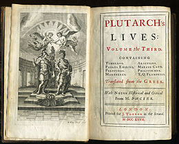

BIOGRAPHY
A biography, or simply bio, is a detailed description of a person's life.
It involves more than just the basic facts like education, work, relationships, and death;
it portrays a person's experience of these life events. Unlike a profile or curriculum vitae (résumé),
a biography presents a subject's life story, highlighting various aspects of his or her life, including
intimate details of experience, and may include an analysis of the subject's personality.
Biographical works are usually non-fiction, but fiction can also be used to portray a person's life.
One in-depth form of biographical coverage is called legacy writing. Works in diverse media, from literature
to film, form the genre known as biography.
An authorized biography is written with the permission, cooperation, and at times, participation
of a subject or a subject's heirs. An autobiography is written by the person himself or herself,
sometimes with the assistance of a collaborator or ghostwriter.

One of the earliest biographers was Cornelius Nepos, who published his work Excellentium Imperatorum Vitae
("Lives of outstanding generals") in 44 BC. Longer and more extensive biographies were written in Greek by Plutarch,
in his Parallel Lives, published about 80 A.D. In this work famous Greeks are paired with famous Romans, for example
the orators Demosthenes and Cicero, or the generals Alexander the Great and Julius Caesar; some fifty biographies
from the work survive. Another well-known collection of ancient biographies is De vita Caesarum ("On the Lives of the Caesars")
by Suetonius, written about AD 121 in the time of the emperor Hadrian.
In the early Middle Ages (AD 400 to 1450), there was a decline in awareness of the classical culture in Europe.
During this time, the only repositories of knowledge and records of the early history in Europe were those of
the Roman Catholic Church. Hermits, monks, and priests used this historic period to write biographies.
Their subjects were usually restricted to the church fathers, martyrs, popes, and saints. Their works were
meant to be inspirational to the people and vehicles for conversion to Christianity (see Hagiography). One
significant secular example of a biography from this period is the life of Charlemagne by his courtier Einhard.
Made by me. None rights reserved !